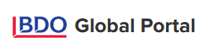

<mat-nav-list>
  <div class="logo py-4">

  </div>
  <mat-divider></mat-divider>
  <a mat-list-item routerLink="/home" routerLinkActive="list-item-active">
    <mat-icon>home</mat-icon>Home
  </a>
  <a mat-list-item routerLink="/clientportal" routerLinkActive="list-item-active">
    <mat-icon>sort</mat-icon>Client Portal
  </a>
  <a mat-list-item routerLink="/dashboard" routerLinkActive="list-item-active">
    <mat-icon>dashboard</mat-icon>Power BI Report
  </a>


</mat-nav-list>
